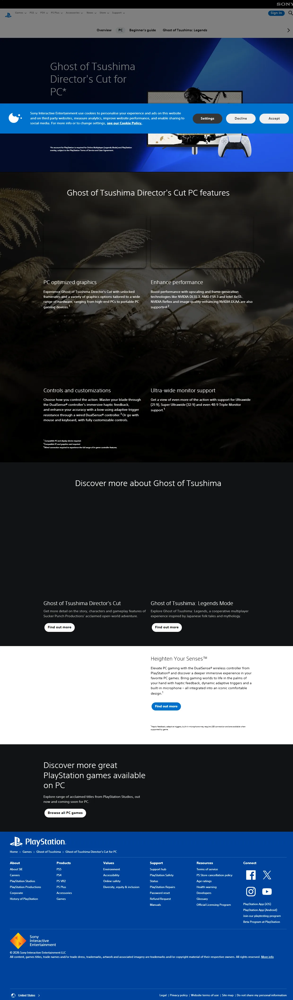
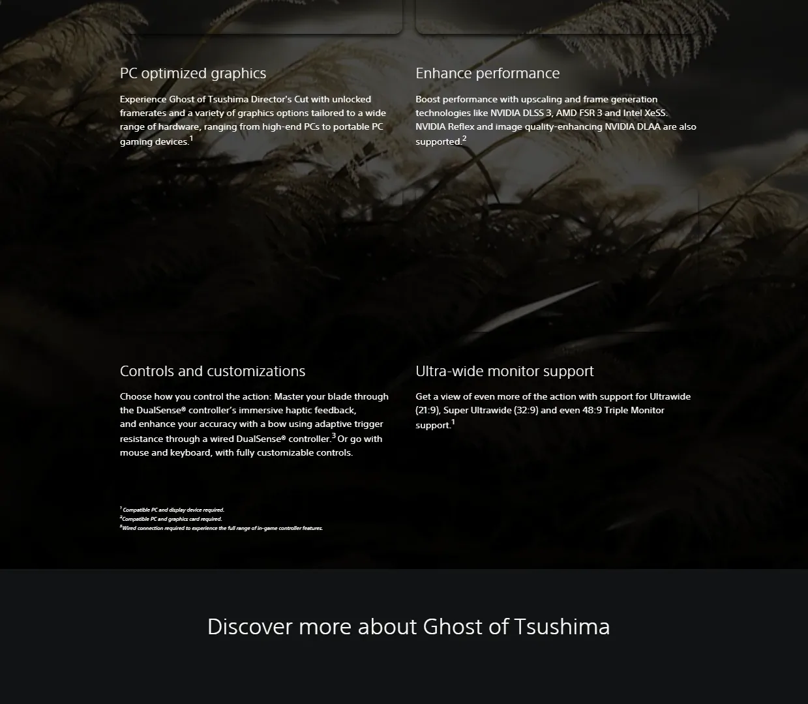
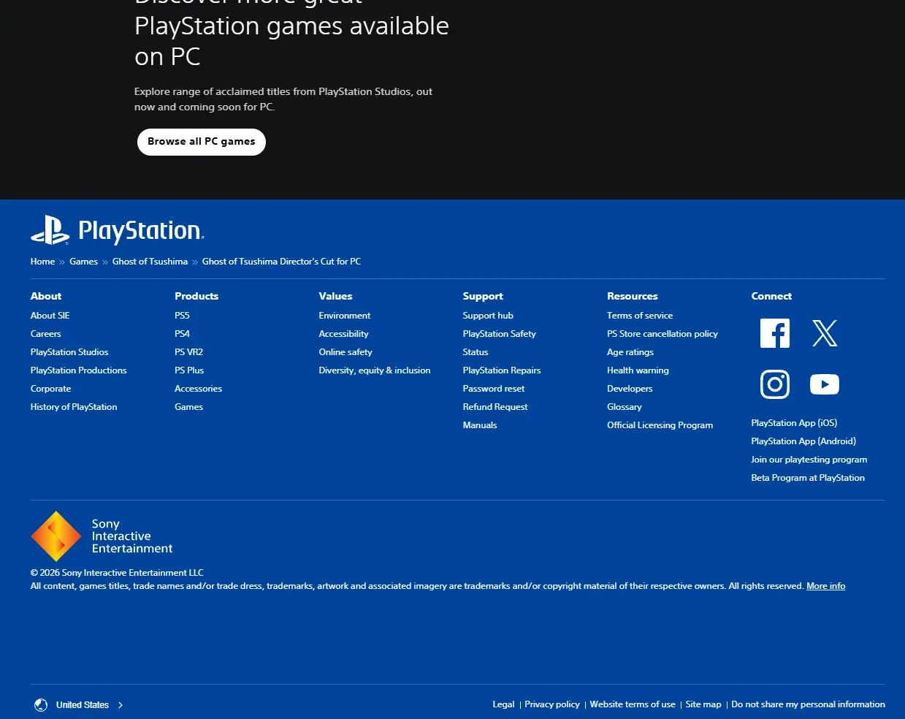

蒙古入侵时期的封建日本开放世界武士动作冒险，东方美学标杆。



想象 1274 年——蒙古帝国第一次入侵日本（文永之役）的真实历史时刻。你身处对马岛——日本九州西北、对朝鲜半岛最近的那座岛屿，蒙古铁骑登陆的第一道防线。Sucker Punch 把对马岛做成浮世绘四季实景：金黄稻田与红色彼岸花、参天竹林、神社鸟居、海崖鸥鸣、温泉雾、雪原——风一吹整座岛都在呼吸。导演剪辑版还包含壹岐岛 DLC，扩展了境井家族过去的伤痕。这是真实历史考据下的镰仓武士时代：和服家紋、太刀、日本弓、苦无、家族盾牌。
你是境井仁 Jin Sakai——对马岛武家境井家族的最后传人。开场你与叔父志村大名一同迎战蒙古先锋，武士军团被蒙古统帅 Khotun Khan 一战屠尽。叔父被俘、岛上百姓被屠戮——你是少数幸存者。为了拯救对马岛你必须背弃武士道荣誉：从背后偷袭、从阴影里下毒、伪装百姓刺杀蒙古将领，成为传说中的「战鬼 Ghost」。但每一次你越接近胜利，你越远离武家荣光——叔父的失望眼神比蒙古铁骑更让你心碎。
那次你第一次和一名蒙古武将四目对峙、Standoff 一刀斩首的瞬间，Sucker Punch 把黑泽明的真剑节奏写进游戏机制——你打的不是 NPC，是整代日式武侠迷的童年圣地具象化；那场你在神社旁的温泉里写下第一首俳句的桥段——浮世绘四季让你第一次明白「武士」不只是杀人的人，还是会停下来听风的人；那次你不得不在叔父的失望眼神和对马岛百姓的活路之间做选择的对话节点——黑泽明致敬式黑白滤镜把这场抉择推到电影级高度。这不是关于打败可汗的故事，是「我到底是境井仁，还是战鬼」的故事——风又起了，下一个家族传说去哪个鸟居？
浮世绘四季 × 黑泽明致敬，是 Sucker Punch 把江户浮世绘四季实景（金黄稻田、红彼岸花、参天竹林、神社鸟居、海崖与雪原）和黑泽明武士片电影语法（真剑对决、Standoff 一刀决、雨戏/雪戏/竹林戏、长镜头静默）反差融合在1274 年蒙古入侵真实历史外壳里的混血美学。底色是葛饰北斋+广重浮世绘版画构图；变异在于开放世界化的浮世绘——风吹彼岸花、鸟落树梢、狐狸穿过红鸟居都成了导航。色彩锁定稻田金 + 彼岸花红 + 鸟居朱三色。
「武士片+浮世绘」视觉线跨越四百年。1831 年葛饰北斋《富岳三十六景》定义浮世绘四季美学母版。1857 年歌川广重《名所江户百景》定义浮世绘开放世界视觉档案。1954 年黑泽明《七武士》定义武士片真剑对决电影语法——本作精神祖父。1962 年黑泽明《椿三十郎》定义独行剑客公路片范式。1962 年市川崑《座头市》系列定义反英雄武士片传统。1980 年黑泽明《影武者》定义大军合战镜头美学。2003 年《杀死比尔 1》把浮世绘+武士片美学带入流行文化全球化。2020 年《对马岛之魂》正式开辟开放世界浮世绘武侠品类。2021 年《导演剪辑版》新增壹岐岛 DLC+电影模式黑白滤镜+胶片噪点把黑泽明致敬推到工业级巅峰。
基于体验清单 · 审美偏好 · IP故事三维度综合选出
点击链接跳转到对应平台查看 · 仅整理外部链接